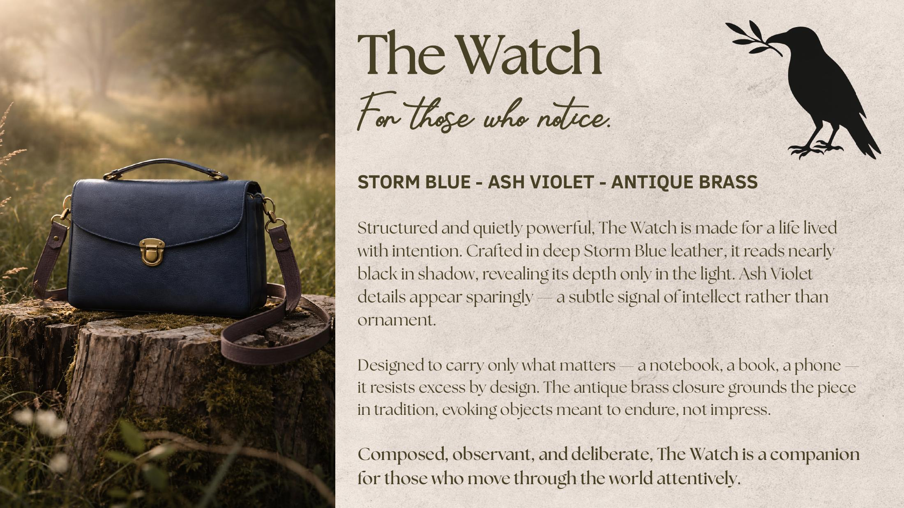

The Watch
For those who notice.
storm blue · ash violet · antique brass
Structured and quietly powerful, The Watch is made for a life lived with intention. Crafted in deep Storm Blue leather, it reads nearly black in shadow, revealing its depth only in the light. Ash Violet details appear sparingly, a subtle signal of intellect rather than ornament.
Designed to carry only what matters, a notebook, a book, a phone, it resists excess by design. The antique brass closure grounds the piece in tradition, evoking objects meant to endure, not impress.
Composed, observant, and deliberate, The Watch is a companion for those who move through the world attentively.